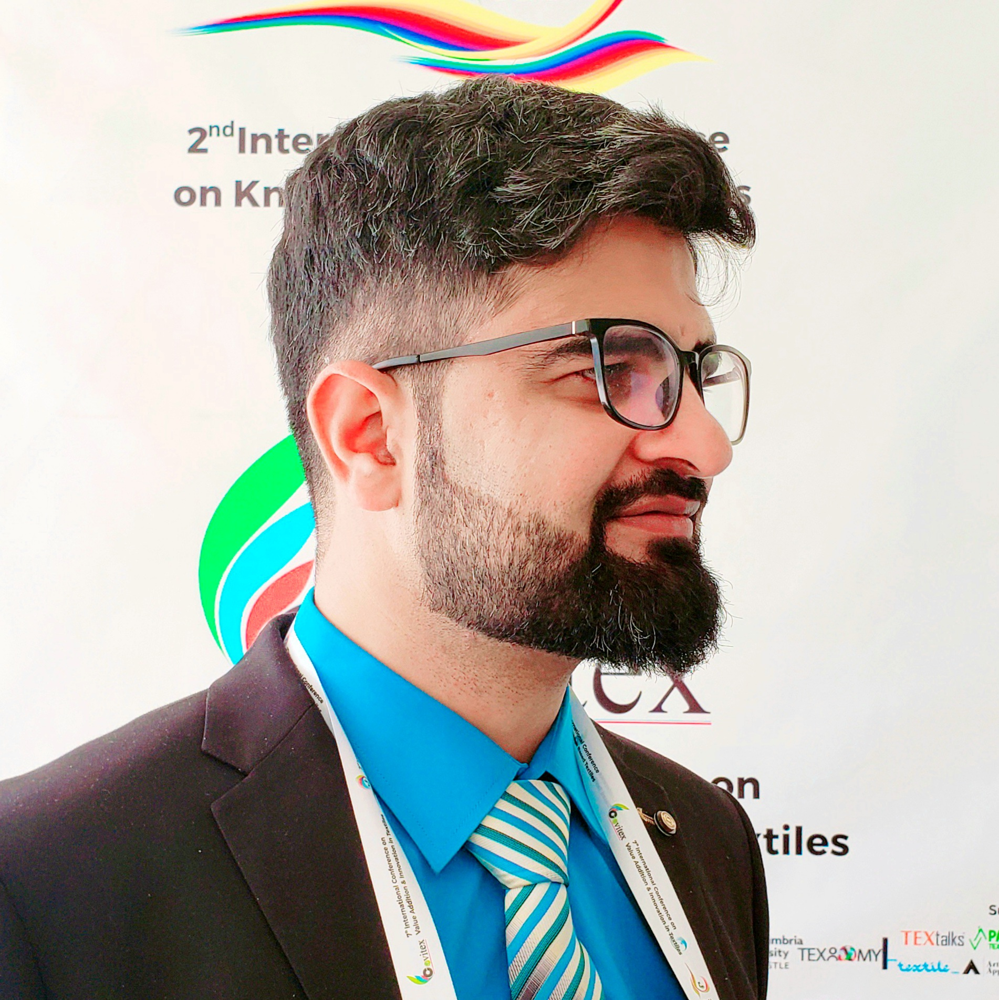

ABOUT ALI RAZA SHAFQAT
Engineering a more
circular future.

Ali Raza Shafqat is a textile engineer, educator, researcher, and founder working across advanced materials and sustainable manufacturing.
His doctoral research at National Textile University focuses on giving textile and agricultural waste a second life through composite materials. He also teaches in the Department of Textile Engineering & Design at BUITEMS and leads ReComp Solutions.
Education
- PhD Textile Engineering, National Textile University — expected 2025
- MSc Advanced Materials Engineering, National Textile University — 2015
- BSc Textile Engineering, National Textile University — 2013